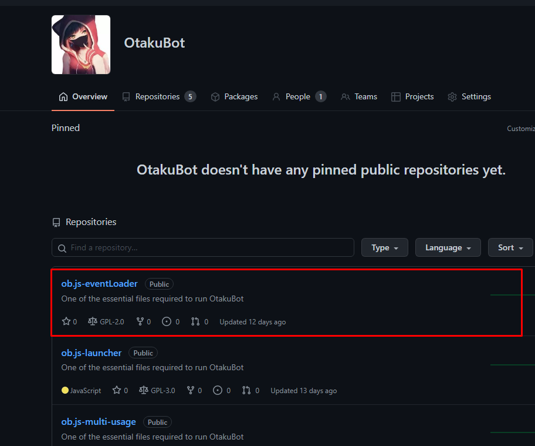
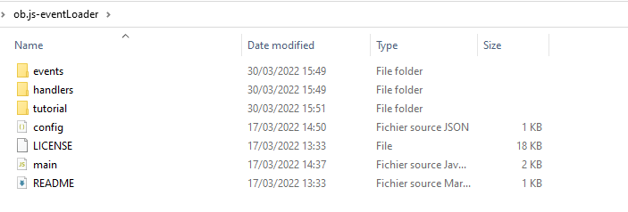

OtakuBot Tutorial #2
Steps 1#
After downloading the folder from Github from
https://github.com/OtakuBot/ob.js-eventLoader"
Steps 2#
Your folder will be like this
./node_modules is required in our next step
Steps 3#
We will download this folder and proceed with the steps on it
https://github.com/OtakuBot/ob.js-multi-usage